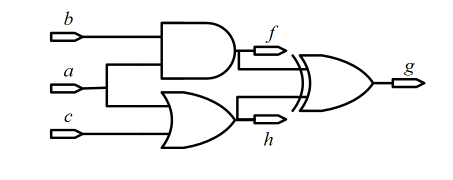
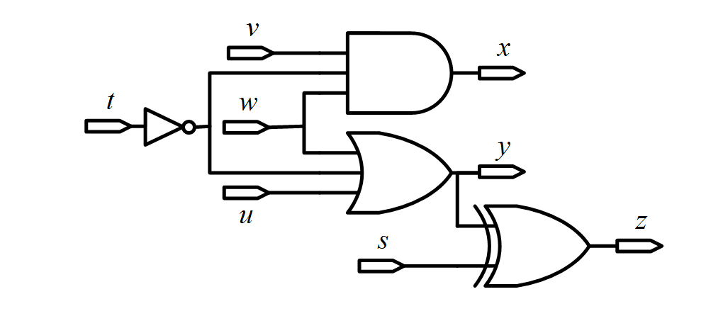
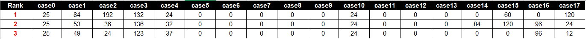

Boolean Matching [1,2] is one of the most widely-used engines in industrial applications and most widely-studied engines in academic research. Basic Boolean matching is for NPNP-equivalence, which negates (N) and permutes (P) circuit inputs and outputs to achieve circuit equivalences. In this contest, we extend the problem more closely to recent industrial challenges from two directions, Non-exact and Projective. The goal of non-exact is to achieve the largest number of output equivalences; projective extends the matching that allows grouping to match another design. Therefore, Non-exact Projective NPNP (NP3) Boolean matching is a problem to find input-groups of two designs for achieving maximum equivalent output-groups as shown in Figure 1. Beyond the basic NPNP Boolean matching, it could be used for achieving better quality and applied to related applications, such as library binding [3], synthesis [4,5], engineering change order [6,7], logic verification [8], and hardware Trojan detection [9]. In our application, the main issue is to find appropriate input-groups, so the number of circuit outputs in a circuit will be limited to 1~16 in this contest.
Fig.1 NP3 Boolean matching
In recent academic research, the methods of basic Boolean matching are developed in several approaches including structure-based, simulation-based, and formal methods [2-16]. Each approach has its own advantages and limitations. In our topic, NP3 Boolean matching is an extension of the basic one and can bring more significant values for research in next generation.
The objective of the contest is to develop a more flexible and powerful Boolean matching engine that can be widely utilized in industry tools. We will provide industrial benchmarks which can represent our challenging problems in diverse applications. We look forward to milestone ideas to achieve optimal matching and bring about new topics in this research area.
Given two combinational circuits, contestants need to find the matching groups of their inputs and outputs that will achieve the largest number of equivalent output groups. A matching group consists of corresponding merged inputs along with their phase, or the inputs which should be set to constants. For example, given two circuits in Figure 2, the first circuit has output functions $ \{ f_1=(a \land c),f_2=(a \lor (b \land c)) \}$, and the second circuit has output functions $ \{ h_1=(x \lor (-y \land z)),h2=(x \land u) \}$. In order to achieve the most equivalent output-groups, the matching groups could be $(a,x), (b,-y), (c,u,z), (f_1,h_2), (f_2,h_1)$ thereby achieving two equivalences$(f_1 == h_2)$and$(f_2 == h_1)$. However, if the matching groups are $(a,-y), (b,u), (c,z), (x=0), (f_1,h_1), (f_2,h_2)$, only one equivalence$(f_1==h_1)$is achieved.
Fig.2
In addition, there are some limitations for grouping:
The requested program should run in a Linux system with a single thread (multiple threads or processes are not allowed). The time limit of running each test case is 1800 seconds in CPU time. The executable file should be named “bmatch” and accepts three arguments:
./bmatch <cir1.v> <cir2.v> <match.out>
<cir1.v> <cir2.v> are input files which describe a Verilog circuit individually. <match.out> is an output file where contestants answer the matching groups.
<cir1.v> <cir2.v> is gate-level circuit which has only one module with primitive gates in Verilog. Notice that there may be same name token between <cir1.v> and <cir2.v>.
modeule <cir_name> ( <name0>, <name1>, … );
input <name0>, <name1>, …;
output <name0>, <name1>,…;
wire <name0>, <name1> , …;
<primitive gate type> ( <name0>, <name1>, … );
<primitive gate type> ( <name0>, <name1>, … );
…
endmodule
<match.out> includes three kinds of matching groups: INGROUP, OUTGROUP, and CONST0GROUP.
INGROUP
1 + <name0>
2 + <name1>
2 - <name2>
2 + <name3>
…
END
The first character of each line is “1” or “2” which means the circuit input is from <cir1.v> or <cir2.v>. The second character is “+” or “-“ which means positive or negative phase. The last string <name0> is the name of a circuit input. Here are some limitation rules for grouping.
One INGROUP
1 + name0
1 + name1
2 + name2
END
INGROUP
1 + name0
2 + name1
END
INGROUP
1 + name2
2 + name1
END
OUTGROUP
1 + <name0>
2 + <name1>
2 - <name2>
2 + <name3>
…
END
The first character of each line is “1” or “2” which means the circuit output is from <cir1.v> or <cir2.v>. The second character is “+” or “-“ which means positive or negative phase. The last string
CONST0GROUP
2 + <name0>
2 - <name1>
2 + <name2>
…
END
The first character is “2” which means it is in <cir2.v>. The second character is “+” or “-“ which means positive or negative phase to bind the constant. “2 + <name0>” is to bind
CONST0GROUP
1 + name0
END
CONST0GROUP
2 + name0
END
INGROUP
1 + name1
2 + name0
END
In this problem, matching pairs between two designs are most important. Merging outputs and efficiency are the secondary considerations. Hence, we design an evaluation methodology as follows.
The score of each case is calculated based on the scores of OUTGROUPs. If an OUTGROUP has any non-equivalence, there is no score for this group. If circuit outputs in OUTGROUP are all pair-wise equivalent, the score is 10 + N where N is the number of circuit outputs. The summation of the scores of output groups is the score of this case. The summation of the scores of all cases is the score of your result. The team with the highest score wins the contest.
For example, given a in <cir1.v> and x, y in <cir2.v>, $a == x == y$. The matching group $(a,x)$ can get a score 10 + 2 = 12. The matching group $(a,x,y)$ can get a score 10 + 3 = 13. However, if $a \neq y$, the matching group $(a,x,y)$ will get a score 0, but the matching group $(a,x)$ still get a score 12.
If two teams have the same score, the rank will be decided by the total runtime of all cases. If a case runs longer than the time limit of 1800 seconds and there is no
Given a case with two designs:
| cir1.v | cir2.v |
|
module top( a, b, c, g, f, h ); input a, b, c;, output g, f, h; and ( f, a, b ); or ( h, a, c ); xor ( g, f, h ); endmodule  |
module top( s, t, u, v, w, x, y, z ); input s, t, u, v, w; output x, y, z; wire tn; not ( tn, t ); and ( x, w, v, tn ); or ( y, w, u, tn ); xor ( z, y, s ); endmodule  |
| match.out | ||
|
OUTGROUP 1 + f 2 + x END OUTGROUP 1 + h 2 + y 2 - z END |
INGROUP 1 + a 2 + w 2 - t END INGROUP 1 + b 2 + v END |
INGROUP 1 + c 2 + u END CONST0GROUP 2 – s END |
$t$ is negatively grouped with w, and s is bind to constant 1, so$f==x$and$h==y==-z$.
The score is (10+2) + (10+3) = 25, where(10+2) is from $f==x$ and (10+3) is from $h==y==-z$.
| match.out | ||
|
OUTGROUP 1 + f 2 + x END OUTGROUP 1 + h 2 + y END |
INGROUP 1 + a 2 + w 2 - t END INGROUP 1 + b 2 + v END |
INGROUP 1 + c 2 + u END |
$f==x$ and $h==y$ are correct.Hence, Team B gets the score (10+2) + (10+2) = 24.
| match.out | ||
|
OUTGROUP 1 + f 2 + x 2 + z END OUTGROUP 1 + h 2 + y END |
INGROUP 1 + a 2 + w 2 - t END INGROUP 1 + b 2 + v END |
INGROUP 1 + c 2 + u 2 - s END |
$f==x$ and $h==y$ are correct, but $f==z$ is incorrect.Hence, Team C only get score 12 from $h==y$.
Team Ranking:1. Team A ( score 25 ) 2. Team B ( score 24 ) 3. Team C ( score 12 )
At the start, we suggest contestants write a simple Verilog gate-level parser to put designs into proper circuit structures so that a Boolean matching engine can be developed based on such circuit structures and output <match.out>. Contestants are encouraged to brainstorm for new ideas. For a tutorial and an overview of current algorithms, contestants are advised to survey the course slides [1], the book chapter [2] and the papers related to [16].
For old basic Boolean matching, there are some academic papers developed in various aspects: Spectral [3], Signature [2,10,11], Canonical-form [12,13], BDD [3,8,14], and SAT [2,11,15,16]. Notice that they are just for reference and cannot be directly applied to this new topic. Besides, some circuit cases may be too large to be directly represented by BDDs. We encourage contestants to try some new ideas. Your program should generate
Finally, have fun and welcome to submit questions.
[1]Hadi Katebi and Igor L. Markov, Large-scale Boolean Matching, DATE, 2010
[2]TingTing Hwang, “Boolean Matching in Logic Synthesis”, course slide.
Ahttp://www.cs.nthu.edu.tw/~tingting/logic/ch5-2.ppt
[3]Luca Benini and Giovanni De Micheli, A Survey of Boolean Matching Techniques for Library Binding,Design Automation Electronic System, ACM, 1997.
[4]J. Cong and Y.-Y. Hwang, Boolean Matching for LUT-Based Logic Blocks with Applications to Architecture Evaluation and Technology Mapping,
CAD Integrated Circuit System, IEEE, 2006.
[5]C. Yu, L. Wang, C. Zhang, Y. Hu, and L. He, Fast Filter-Based Boolean Matchers, Embedded Systems Letters, IEEE, 2013.
[6]S. Krishnaswamy, H. Ren, N. Modi, and R. Puri, DeltaSyn: An efficient logic-difference optimizer for ECO synthesis, ICCAD, 2009.
[7]S.-L. Huang, W.-H. Lin, C.-Y. (Ric) Huang, Match and replace - A functional ECO engine for multi-error circuit rectification, ICCAD, 2011.
[8]J. Mohnke, P. Molitor, and S. Malik, Application of BDDs in Boolean matching techniques for formal logic combinational verification,
Software tools for Technology Transfer, 2001.
[9]P. Swierczynski, M. Fyrbiak, C. Paar, and C. Huriaux, Protecting against Cryptographic Trojans in FPGAs, FCCM, 2015.
[10]A. Abdollahi, Signature based Boolean matching in the presence of don’t care, DAC, 2008.
[11]K.-H. Wang, C.-M. Chan, and J.-C. Liu, Simulation and SAT-Based Boolean Matching for Large Boolean Networks, DAC, 2009.
[12]G. Agosta, F. Bruschi, G. Pelosi, and D. Sciuto, A Transform-Parametric Approach to Boolean Matching, CAD Integrated Circuit System, IEEE, 2009.
[13]Z. Huang, L. Wang, Y. Nasikovskiy, and A. Mishchenko, Fast Boolean matching based on NPN classification, ICFPT, 2013.
[14]S. Chatterjee, A. Mishchenko, R. Brayton, Reducing Structural Bias in Technology Map, ICCAD, 2005
[15]C.F. Lai, J.-H.R. Jiang, and K.-H. Wang, BooM: A Decision Procedure for Boolean Matching with Abstraction and Dynamic Learning, DAC, 2010
[16]C.F. Lai, J.-H. R. Jiang, and K.-H. Wang, Boolean Matching of Function Vectors with Strengthened Learning, ICCAD, 2010
